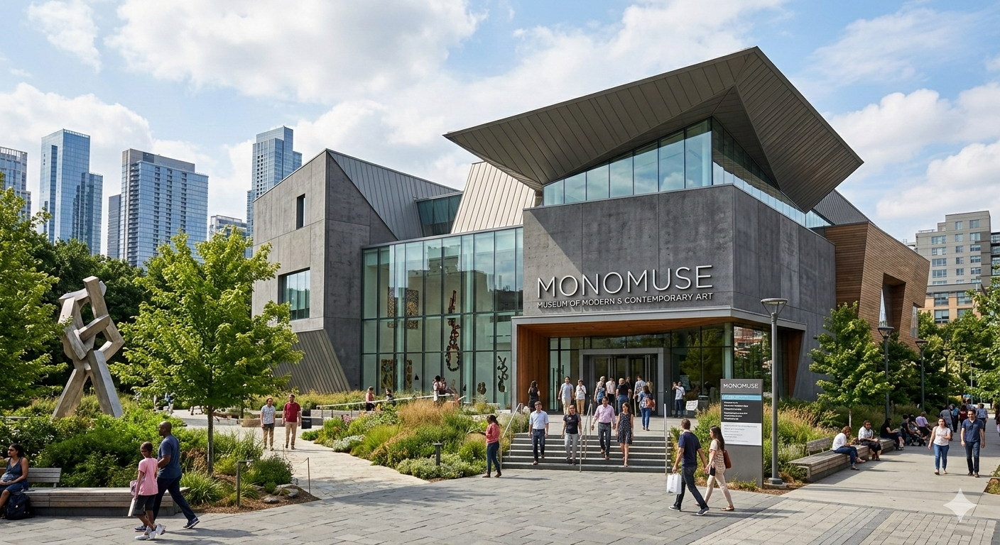

Mission Statement
MonoMuse is dedicated to exploring the evolving relationship between art, technology, and society. Our mission is to inspire curiousity and creativity by showcasing innovative exhibitions that highlight how digitical tools, emerging technologies, and human imagination shape the future of artistic expression.
Who We Serve
MonoMuse serves a diverse audience of art enthusiasts, students, researchers, and community members who are interested in the intersection of art and technology.
Founding Story
MonoMuse was founded in 2020 by a group of artists, technologists, and cultural leaders who recognized the need for a contemporary museum that explores the impact of digital innovation on art and culture. The founders envisioned MonoMuse as a space where visitors could engage with cutting-edge exhibitions that challenge traditional notions of art and creativity, fostering a deeper understanding of how technology is shaping our world.
Milestones
Since its opening, MonoMuse has achieved several milestones, including hosting over 20 exhibitions that have attracted thousands of visitors, launching educational programs for students and educators, and collaborating with artists and technologists from around the world to create innovative exhibitions that push the boundaries of creativity.
- 2020: MonoMuse opens its doors with the inaugural exhibition "Digital Horizons."
- 2021: Launch of the MonoMuse Education Program, offering workshops and resources for students and educators.
- 2022: Collaboration with international artists to create the groundbreaking exhibition "Interactive Narratives."
- 2023: Expansion of the museum's digital presence with virtual tours and online exhibitions.
- 2024: Recognition as a leading institution in the field of art and technology, receiving multiple awards for innovation and excellence.